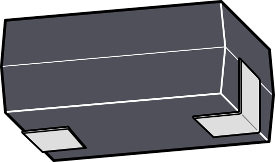
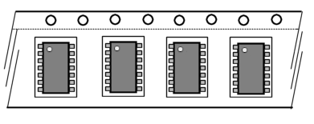

Packages is a tool to maintain a repository of packages of electronic components. It is developed with the goal that various applications use one and the same repository as a basis for their handling of packages. The repository is in a well-documented JSON format, easy to parse in a variety of programming languages.
Many packages for electronic components exist, but it is not as straightforward as having a long list. On occasion a package name refers to a group of packages, and package name on its own is not conclusive about all dimensions of the package. Essentially the same package may also be known under multiple names —this is in part the result of various standardization bodies that each on their own standardize packages, without regard to the other organizations doing the same.
EDA suites (Electronic Design Application) focus on a flattened view of the package: the footprint. For mechanical design, the height of the package is important too, and pick-&-place machines often need to know the shape of the terminals (for example, gull-wing versus lug-lead) to recognize and centre the component on the nozzle. That is to say: these various applications all use package data, but they don’t all need the same data. Packages groups the data in a structured way, and makes it easily searchable (using both keyword search and parametric search).
This manual starts with instructions on how to use and navigate the user-interface of the program. It then follows up with a chapter on the subject itself: the packages for electronic components. To use Packages well, both chapters are equally important, and you will find these two chapter to cross-reference each other.
The remaining chapters are reference material.
The Packages application including its data set and other resources, hereby collectively referred to as “the software”, is copyright 2021 CompuPhase, and licensed under the Apache License version 2.
This manual is copyright 2021 CompuPhase and licensed under the Creative Commons Attribution-Non-Commercial-ShareAlike 4.0 International License.
The project is maintained at: https://github.com/compuphase/Packages
On start-up, Packages opens the repository that was most recently used. In practice, you will probably use a single repository for all your packages, but you can have several repositories and select the one to browse/edit in the “File” menu.
Changes or additions to the repository are saved automatically on switching to a new package or when closing the application. There still is a “Save” option in the File menu, if you wish to save your edits without changing to a different package.
The application shows a single package at a time. On the top row, you will find the navigation buttons (browse buttons), as well as menu and search buttons. Below that, the package information is split in three sections.
The first section gives the generic package information: its name (or identification), its body size, number of pins, pitch between the pins, termination style (shape of the leads), and other characteristics.
The second section lists variants of the same “common shape” for the package. The variant adds the height of the package, the standard it conforms to (if any) and the presence of an exposed pad (or “thermal pad”) to the generic information. See topic Common names & variants for the distinction between a generic package and a variant.
The third section gives detailed information about the footprint for the package: the shape and size of the pads, and the positions of these pads. As an aside, Packages does not generate footprints for any EDA program —that is not its goal. However, due to the open format of the output file, a third-party script can use the detailed information on the package and pads to generate these footprints.
On start-up, Packages shows the full list with all packages in the repository. You can restrict the range to a subset, based on keywords or specific package parameters (e.g. span, height, pin count). See topic Searching and filtering packages for details.
Depending on the package, not all data may be relevant. However, the top section (of the user-interface, see Figure 1) should always be completed.
A package may have more than one name —this is covered in detail in the topic Common names & variants. The names that refer to the generic “flat view” shape of the package, should be listed as names in the top section. Other applications can use these aliases to look up package information in the course of exchanging data: different programs used in electronics production may use different names for the same package. Applications can also use the aliases to translate all packages being entered into the system to a preferred naming convention.
In the case of “chip” packages, like 0603 and 0805, we recommend to include both the “imperial” name and the “metric” name for the package (in this case 1508 and 2012 respectively). As explained in Metric versus Imperial, conflicts arise for the smaller packages: for example, 0603 is a valid package label in both imperial and metric —but pointing to two very different packages. Since Packages does not allow for naming conflicts, our recommendation is to add an “M” suffix to the metric label: the equivalent for 0603 is 1508M, and 0805 is 2012M.In general, we also suggest to put the preferred name(s) first in the list of names. When an application translates package names into a preferred naming convention, it typically picks the first “preferred name” that matches the chosen naming convention.
The description is optional, and contains general purpose text. The description is included in the search function, so you can use the description to include search terms that are not covered by the other fields.
For SMD type packages (the focus of the Packages application and data file), the termination field is an important parameter. For optical alignment, pick-&-place machines need to know at what elevation to scan the (body of the) component, and that depends on the lead shape. Therefore, packages that are identical apart from their termination style, must be entered as separate packages. For example, SOD123 and SOD123F have gull-wing and lug-lead terminations respectively, and they are therefore separate packages —not variants.
The fields for the pin count and pitch are fairly self-explanatory (see also topic Pitch and spans for the pitch dimension). An exposed-pad (or thermal pad) is seen as an attribute of a package, and it is typically not included in the pin count.
The tape packaging orientation is standardized for common parts (see chapter Normal orientations). For connectors or exotic packages, the tape orientation can be selected here. Tape packaging orientation is relevant only for components package is tape (on reel); for packages too big for tape packaging, leave this field at zero. Again, see chapter Normal orientations for details.
The relevance of the “polarized” field is that packages for polarized components are regularly oriented differently in tape packaging than those for non-polarized parts.
Body size and lead-to-lead size are also inherent characteristics of a package. These sizes allow for a tolerance, however (this tolerance can be looked up in the specifications of the respective packages). See topic Package dimensions and outlines for details on the various “size” specifications of a package.
If a package does not have pins (termination is either “endcap” or “no-lead”, the lead-to-lead size does not need to be filled in (it is by consequence identical to the body size).
The middle section in the user interface (see Figure 1) is for the variants of the generic package. The generic package portrays a flattened view. For a long time, EDA programs needed no more that this representation. For assembly of the PCB, and for mechanical design (e.g. design of the enclosure), the height of the package also becomes an important parameter (and it is quite common that a generic package exists in different heights). This is why the details of various variants can be entered in a table. See the topic Common names & variants for background information.
For example, an LQFP package and an TQFP package share all parameters (and they share it with the generic QFP package), except that LQFP is about 1.5 mm thick and TQFP about 1.0 mm.
Each variant must have a unique name, and the name of a variant may not conflict with any of the aliases for the generic package either. Names for variants may follow a standard or an ad-hoc convention —see also topic Package naming standards. If it is a standardized convention, you can indicate that convention on the row too. Doing so enables applications to translate between naming conventions.
For the “flat view” dimensions, Packages stores the nominal size and a tolerance from that nominal size. For the height, it uses a range: minimum height to maximum height. The motivation is that package standards also specify the height as a range; IPC-7351 only records a maximum height in its naming convention.
The bottom section of the user interface (Figure 1) has design parameters for the footprint.
The majority of footprints use a single pad shape & size for most (or all) of the pins. Packages splits the pad shapes from the pad positions for a package. Thus, you often need to add only one or two pad shapes, even for packages with a high pin count.
In the pad shape specification, you can furthermore mark a pad as “exposed pad” (also called a thermal pad). A pad marked as such is then only valid for those variants that are also marked as having an exposed pad (in the “variants” section of Figure 1).
For example, for a HSOIC8 package (8-pin SOIC with 1.27 mm pitch and an exposed-pad):
The exposed pad is typically not included in the pin count (in the package characteristics, top section of Figure 1).
You can open the search view by clicking the button “Search” (top right in Figure 1) or with the key combination Ctrl+F.
The search is on keywords and/or specific package parameters. Only exact matches are found for the pin count and the pitch, if these are set as search parameters. However, for the span, a 10% margin applies.
Next to jumping to a match (by double-clicking on the row in the “matches” table), you can add one or more matches to a selection. When a selection is active, the range of packages in the main view (Figure 1) is restricted to the selection. Multiple disjoint searches can be added to a selection.
It is obvious that a specification for a component package needs to record the size, number of pins, pitch, and a few other characteristics. And it needs to have a kind of label that uniquely identifies it. Yet, as you look at the user-interface of Packages, you will spot right-away that there are multiple, different, fields for the size of the package, as well as multiple “labels” that all uniquely point to the same package.
The QFP group of packages comprises ranges of with pin counts from 16 to 256 and pitches from 0.4 mm to 1.0 mm. With a chosen pin count and pitch, for example QFP32 with pith 0.5, the name still refers to a group of packages that all share the essential dimensions in the flat plane. There are variants, like LQFP which is about 1.5 mm thick as opposed to 2.8 mm nominally for the plain QFP (the “L” in LQFP stands for low-profile), or TQFP with a nominal height of 1.0 mm (“T” stands for thin). There are also variants with bumpers in the corners to protect the leads, but these bumpers are not included in the body size —so the core dimensions are still the same as for QFP.
All these variants (with the same pin count & pitch) share the same footprint, and have the same pitch and body & lead-to-lead sizes. Packages therefore groups them together in a single specification. The variants, are listed in that specification with their distinguishing attributes.
Regardless, even a package group may be known under different names. As already noted earlier, in part this is due to different standardization organizations writing their own standard for one and the same package; see chapter Package naming standards for more information. Also note that standardization organizations tend to follow industry practice —the package exists before the standard gets written. Therefore, Packages allows you to add aliases for each common name (as well as adding variants).
See also the topic Metric versus Imperial for another reason why a class is known under different names: sometimes a standardization organization cannot decide what is (or should be) the standard.
The size or bounding box of a package may refer to one of four dimensions, and each has its purpose.
The body size is, indeed, the size of the bounding box around the body excluding the pins. The lead-to-lead size is the bounding box including the pins. For packages that have no pins extruding from the sides of body (like QFN or BGA), the body and lead-to-lead sizes are the same. In the package data file (see chapter File format specification), the lead-to-lead size may be omitted in case it is equal to the body size.
The footprint contour (also called the footprint outline) is the bounding box around the footprint. With the SOT23-5 example in the picture above, the contour is wider than the lead-to-lead size, but not as high. The courtyard goes around the package, the leads and the footprint; this is always the biggest size.
Packages stores the body size, lead-to-lead size and footprint contour. The courtyard is not stored, because it is the envelope around the lead-to-lead size and the footprint contour (and it can therefore be derived from these dimensions).
The horizontal and vertical dimensions for body, lead-to-lead, spans and others depend on how the how the package is oriented: turn it by 90 degrees and the x & y swap places. Therefore, to properly specify the any dimensions of a package, we must first establish the normal orientation (or zero-orientation) of that package. See chapter Normal orientations for the standardized normal orientations of packages.
An essential concept for machine assembly of a PCB (with a pick-&-place machine) is the centroid: the centre of mass. A pick-&-place machine picks up the component at its centroid. The rationale is that pick-&-place machines use suction to hold the component “glued” to its nozzle, and the amount of suction is calibrated to the weight of the component. However, if a component is not in balance beneath the nozzle, it may “float” on the nozzle as the nozzle accelerates and decelerates in its movements from the feeder to the placement position. In other words, placement may then be less accurate.
For symmetric packages (the grand majority of packages), the centroid coincides with the geometric centre. For these, the origin offsets are zero, for the body, the lead-to-lead envelope and for the footprint contour. Otherwise, you need to specify the appropriate offsets of the geometric centre relative to the centroid.
In the above figure of a TO-252 package (also known as DPAK), the centroid is marked with the blue ⊕ symbol. When looking at the body of the TO-252 package, the centroid still falls on the geometric centre of the body —which is by design. For the lead-to-lead envelope, this is not the case: the geometric centre is offset to the left of the centroid. In the concrete case of the TO-252 package, the origin offset of the lead-to-lead envelope is X: -0.9 mm, Y: 0 mm.
The figure omits a drawing of the footprint for this package, but an origin offset applies to the footprint contour as well (and, consequently, to the courtyard too).
The pitch is the distance between two pins or pads on the same row. The span is the distance between pads of opposing rows. It is illustrated in Figure 4 with a footprint for the SOT23-5 package.
The pitch is an attribute of the package (the pitch of a footprint is necessarily the same as the spacing of the pins of the package), but the span depends on the footprint. Typically, the span (horizontal and/or vertical) is slightly smaller than the lead-to-lead size in the same direction, but there is no hard rule —it depends on the termination type amongst others. A quad-row package has both a horizontal and a vertical span; these are the same for square packages, but different for a quad-row rectangular package.
A 2-pin surface-mount component typically has a span, but not a pitch. Through-hole 2-pin connectors form an exception, their pin distance is often specified as their “pin pitch”.
The package file is a JSON file with an array of “objects”, each object representing a package. The table below describes the fields for a single package.
Fields that are not relevant for a particular package may be omitted. For example, the “exposed-pad” field is irrelevant for a 2-pin “chip” package, and it is usually not recorded. Likewise, for packages with “endcap” or “no-lead” terminations, the lead-to-lead size is identical to the body size, and it is then sufficient to record the body size.
For fields that have an array type, if that array has no elements, the field may also be set to null. For example, when a package has no variants, the variants field may be set to null, rather than an empty array. Still, the preferred way to handle this case is to not include the variants field at all.
| Field | Type | Description |
|---|---|---|
| names | array of strings | common names |
| variants | array of objects | list of specific variants of the common name |
| · name | string | the (normative) name of the variant |
| · standard | string | name of the standard or convention (if any) |
| · height | object | the height range of the variant in mm |
| · · low | number | minimum height in mm |
| · · high | number | maximum height in mm |
| · exposed‑pad | boolean | whether this variant has an exposed-pad |
| · notes | string | optional comment or notes |
| description | string | optional brief description |
| type | string | “SMD” or “Through-hole” |
| body | object | body size (excluding pins) and centroid |
| · cx, cy | number | nominal horizontal and vertical dimensions in mm |
| · tol.x, tol.y | number | optional tolerance for the horizontal and vertical dimensions in mm |
| · x, y | number | offset of the body centre from the centroid |
| lead‑to‑lead | object | lead-to-lead” size and centroid (see Figure 2) |
| · cx, cy | number | lead-to-lead nominal horizontal and vertical dimensions in mm |
| · tol.x, tol.y | number | optional tolerance for the horizontal and vertical dimensions in mm |
| · x, y | number | offset of the shape centre from the centroid |
| pin-count | integer | number of pins or leads of the package |
| pitch | number | pin pitch in mm, if applicable |
| termination | string | one of the following: “endcap”, “gull-wing”, “inward-L”, “lug-lead”, “J-lead”, “no-lead”, “ball”, “castellated” or “through-hole” |
| polarized | boolean | true or false (may be absent if irrelevant) |
| tape-orientation | integer | angle between packaging orientation (EIA-481D) and normative zero-orientation (IPC-7351), in degrees |
| footprints | array of objects | list van footprints |
| · type | string | one of “nominal”, “least” or “most”, according to the specification in IPC-7351 |
| · span | object | distance between pads in opposing rows (see Figure 4) |
| · · cx, cy | number | distance in mm |
| · contour | object | footprint contour and centroid (see Figure 2) |
| · · cx, cy | number | contour horizontal and vertical dimensions in mm |
| · · x, y | number | offset of the contour centre from the centroid |
| · pad‑shapes | array of objects | list of unique pad shapes and sizes used in the footprint |
| · · pad-id | integer | sequence number of the pad shape definition |
| · · cx, cy | number | horizontal and vertical dimensions of the pad in mm |
| · · shape | string | one of “rectangle”, “round”, “roundedrect”, “obround”, “polygon” or “special” |
| · · exposed‑pad | boolean | whether this pad represents an exposed centre pad (for variants that have an exposed-pad) |
| · · hole | number | diameter of the hole in the pad (applicable for through-hole packages) |
| · · x, y | number | offset of the pad origin relative to the pad’s geometric centre |
| · pad‑positions | array of object | list of the pad positions |
| · · pin-id | integer | pin number |
| · · pad-id | integer | reference to the pad shape for this pin |
| · · x, y | number | position of the pad origin, relative to the centroid position of the footprint |
| · · rotation | number | rotation of the pad shape, relative to the definition in the pad-shapes array |
For the pad shape, a square pad is stored as a “rectangle” shape; the cx and cy parameters will establish that it is square. The radius for the rounded corners of a “roundedrect” shape is not specified; in the scope of Packages, the intent is to flag the pad shape as an intermediate form between rectangle and obround.
All coordinates assume that in the 2D projection, the Y-axis points upwards. This is in conformance with the Gerber standard. Some design programs use a downward Y-axis —a common convention in the early days of computing. Such programs should flip the sign on Y coordinates on reading the data from the JSON file.
| Name | Notes | |
|---|---|---|
 | endcap | used on 2-pin “chip” packages |
 | gull-wing | common on semiconductor packages, especially for components with more than two pins (this terminal shape is also called L-lead) |
| lug-lead | pins extend flat from the bottom, used on some diode packages (this terminal shape is also called flat-lead) | |
|  | inward-L | used on 2-pin “molded” packages, such as tantalum capacitors (note how the pin folds underneath the package) |
 | J-lead | components with J-lead terminals can be soldered on the PCB or be inserted in a socket PLCC packages use J-lead extending from all four edges |
| no-lead | notably QFN and DFN packages on occasion, pads are “pulled back” from the edges (PQFN for Pulled-back, Quad Flat No-lead) | |
 | ball-grid | |
| land-grid | similar to ball-grid, but flat contact surfaces instead of solder balls may be used with a needle-pin connector, or be reflow soldered | |
| castellated | common for modules, occasionally used on resistor arrays on 2-pin components, this terminal style is also called side-concave |
The normal orientation is the orientation that the component has when its rotation is zero degrees. There are two predominant standards for the normal orientation of components on a PCB. Fortunately, these two standards, IPC-7351 and IEC 61188-7 “Level A”, are compatible with each other.
In brief, the normal orientation of 2-pin packages is such that pin 1 is on the left and pin 2 is on the right. For polarized components, such as electrolytic or tantalum capacitors, pin 1 is the “plus”-pin. For diodes, pin 1 is the cathode. For packages with more than 2 pins, the component is oriented as such that pin 1 is aligned to the top left corner. If pin 1 is in the middle of an edge, instead of near a corner, pin 1 must be aligned to the top. A few exceptions to these general rules are noted beneath the table.
Most surface mount components come packaged in tape, on reel. A separate standard exists for how the components are packaged in carrier tape, EIA-481. Manufacturers generally adhere to the EIA-481 standard, but many also specify exceptions for specific component packages; for example, many manufactures have continued to package QFP and QFN packages according to the rules in EIA-481C instead of adopting the changes of EIA-481D.
The table below shows the normal orientations according to IPC-7351 and the packaging orientation according to the latest EIA-481 standard. The angle by which a package must be rotated to go from EIA-481 to IPC-7351 is also given.
Note that EIA-481 only applies to packaging in tape; see the notes at the end of this section for tube and tray packaging.
| EIA-481D | IPC-7351 | Notes | |
|---|---|---|---|
 |
 |
Non-polarized chip or moulded packages, e.g. resistors, capacitors, inductors, 2-pin crystals. | |
 |
|
Polarized chip or moulded packages (except capacitors, see below). For diodes, pin 1 is the cathode. | |
 |
 |
 |
Tantalum capacitors or other capacitors in moulded packages. Pin 1 (with a bar) is the positive pole. |
|
 |
Electrolytic capacitors. Pin 1 is the positive pole. (The black bar marks the negative pole.) | |
 |
|
 |
Power inductors (non-polarized). |
|
PLCC2 package (for LEDs). See also the notes below. | ||
 |
|
 |
PLCC4 and PLCC6 packages (for multi-colour LEDs). See also the notes below. |
 |
Resistor arrays and capacitor arrays in a chip package. | ||
 |
|
Ceramic resonators with 3 pins. See the notes below for crystals and oscillators with two or four pins. | |
 |
 |
Rectangual 4-pin crystals. See the notes below for crystals with two pins, and oscillators with a square shape. | |
|
 |
3-pin SOT style transistor, e.g. SOT23, SOT323, SOT523, SC70, TO-236. | |
|
5-pin SOT style packages, e.g. SOT23-5, SC70-5, SSOP-5. | ||
 |
|
6-pin & 8-pin SOT style packages, e.g. SOT23-6, SC70-6, SSOP-6. | |
|
 |
SOT143 and SOT343. | |
 |
|
 |
SOT223, SC73, TO-89, TO-261. (See below for similar packages.) |
 |
SOT89, TO-293. (See above and below for similar packages.) | ||
|
SOT89, TO-293. (See above and below for similar packages.) | ||
|  |  |
Rectangular IC packages: SOIC, SSOP, TSSOP, TSOP type 2 (but see below for TSOP type 1). | |
 |
|
 |
TSOP type 1. |
 |
|
 |
Square IC packages: QFP, QFN, SON, DFN (but not BGA and most PLCC, see below). |
 |
Square IC packages that have pin 1 in the middle of the row, which is common for PLCC packages. | ||
 |
Square Grid array IC packages (BGA, LGA, PGA); see above for QFN, QFP and other square IC packages. |
The low pin count PLCC packages for LEDs have a chamfered corner to mark pin 1. For PLCC2, pin one is usually the cathode (conforming to IPC-7351); for RGB LEDs in PLCC4 and PLCC6 packages, pin 1 is typically the common anode.
The PLCC4 package uses a clockwise pin numbering scheme, starting from pin 1 in the upper left corner. The zero-orientation is not explicitly defined in the IPC-7351 standard (because IPC-7351 assumes a counter-clockwise pin numbering).
The PLCC6 package uses a counter-clockwise pin numbering scheme, similar to dual-line IC packages.
Crystals in a 2-pin chip package follow the orientation of 2-pin non-polarized chip packages. Ceramic resonators with three aligned pins are oriented as shown in the table.
For crystals and crystal oscillators with four pins (or more), the orientation in tape is inconclusive. Rectangular shaped crystals generally follow the alignment as shown in the table. Square packages (which are typically oscillators, rather than crystals) regularly use the orientation of PLCC4.
4-pin crystals and oscillators may use a clockwise pin numbering, like PLCC4. For crystals, the pin numbering direction is mostly irrelevant, because the crystal is typically connected between pins 1 and 3 (with pins 2 and 4 either unconnected, or both connected to ground). Regardless of the direction of the pin numbering, pins 1 & 3 are at the same positions.
Components are oriented sideways in tube (sticks), such that the pins of consecutive components do not touch. The end of the tube that “pin 1” of the component points to is often marked with a green stop or pin.
JEDEC trays have a chamfered corner. If the tray is oriented such that the chamfered corner is on the upper left, the components in the tray are oriented according to IPC-7351.
There have been several attempts to come to a generic naming convention that describes standard packages in a more precise and less ad-hoc way. The one that has gained widest acceptance, is IPC-7351B “Naming Conventions for Standard SMT Land Patterns”. This standard is not without its flaws, though: internal inconsistencies and ambiguous descriptions make the standard open to interpretation. These were set out to be fixed in the updated IPC-7351C standard, but the work on this update stalled, the IPC workgroup disbanded and the new workgroup has not held a meeting for the past four years.
A draft for the proposed updates for the chapter on the package naming convention, though, was published by the author of that chapter —the “Library Expert Footprint Naming Convention”. It is available from https://www.pcblibraries.com/, requiring a free registration. Despite being an unofficial standard, this draft document is considered the current IPC naming convention. For a summary, see topic IPC-7351 summary, and also see the examples.
A contender is JEITA standard ED-7303C “Name and code for integrated circuits package” (originally an EIAJ standard; JEITA is the successor of EIAJ). ED-7303 is more limited than IPC-7351, because it only deals with packages for integrated circuits. The advantage, however, is that the naming convention stays closer to the industry-standard names like TSSOP and LQFP. Codes for pitch, span, or body sizes are affixed at the end as needed. See topic ED-7303 summary for an overview,and also see the examples.
Of mention is furthermore the JEDEC standard JESD30 “Descriptive Designation System for Electronic-device Packages”. This is an elaborate standard that tries to describe every feature of a package. The resulting package names are cryptic, though, and it does not appear that this standard is active use. Curious, in this respect, is that JEDEC also maintains a large collection of design drawings for electronic packages, categorized as a two-letter prefix plus a sequence number (plus an optional suffix), where the prefix is “DO” for diodes, “TO” for transistors, and “MO” or “MS” for integrated circuits. These drawings “reference labels” are actually in common use (e.g. DO-219AA as an alias for SOD123, or TO-252 as an alias for DPAK). Yet, JESD30 ignores these reference drawings and restarts from scratch.
Lastly, none of the above standards covers manufacturer-specific packages (and footprints), such as those for connectors, submodules and special components. As a result, there are no standard names for these packages either. The common convention is that these packages are named:
Manufacturer Name + “_” + Product Number
An example of the above convention is CUI_PJ-001AH-67. —a SMT mounted DC power connector manufactured by CUI.
The product number may contain wild-card characters (typically an “x”), in case there is a range of components that all use the same package.
In the 1980s, the various standardization organizations for the electronics industry came to an agreement to move to metric and specify the dimensions in all future standards in millimetres. However, when the (USA-based) EIA published the PDP-100 standard on the “chip” packages (for surface mount resistors, capacitors, ferrite beads and other 2-pin parts) in 1987, the backlash from the USA industry was such that the EIA back-pedalled on its decision and republished the standard a year later with dimensions in both imperial and metric.
The trouble is: the EIA also chose to identify the packages by their size. For example, the 0805 package is a chip with a length of 8/100th inch and a width of 5/100th inch. In other words, the package’s label is simply its dimensions in the 2D plane in increments of 0.01 inch. In metric, this size is roughly 2.0 × 1.25 mm. That same 0805 package can also be labelled 2012 —again the length and width of the package, but now in increments of 0.1 mm. Both 0805 and 2012 refer to the same package; both are valid, standardized names for one and the same package; both are in active use, although imperial is more common than metric (especially in the USA).
A complication is that you cannot tell from looking at the package name alone, whether it should be interpreted as imperial or metric. At this time, there does not exist a package with the imperial size of 2012, so in this case you can make an educated guess that 2012 must be interpreted as metric. However, conflicts do exist: 0603, 0402 and 0201 are valid imperial sizes for a package as well as a valid metric sizes —but the metric packages being more than twice as small as their imperial counterparts with the same moniker.
| Imperial | Metric | Body size |
|---|---|---|
| 008004 | 0201 | 0.25×0.125 mm |
| 01005 | 0402 | 0.4×0.2 mm |
| 0201 | 0603 | 0.6×0.3 mm |
| 0402 | 1005 | 1.0×0.5 mm |
| 0603 | 1608 | 1.6×0.8 mm |
| 0805 | 2012 | 2.0×1.25 mm |
| 1008 | 2520 | 2.5×2.0 mm |
| 1206 | 3216 | 3.2×1.6 mm |
| 1210 | 3225 | 3.2×2.5 mm |
| 1808 | 4520 | 4.5×2.0 mm |
| 1812 | 4532 | 4.5×3.2 mm |
| 2010 | 5025 | 5.0×2.5 mm |
| 2012 | 5032 | 5.0x3.2 mm |
There was some hope, roughly twenty years ago, that the schism between metric and imperial would be resolved, because the EIA suspended its yearly updates to the PDP-100 standard in 1995, due to it being “in revision”. It never materialized, though (and neither were the updates resumed). The EIA ceased its operations in 2011.
A convention that is increasingly applied (but not yet universal) is to add an “M” suffix to the metric specifications of the packages. Thus, we speak of 0805 and 2012M.
IPC-7351 touts itself as a standard for “land patterns” (footprints), and it adds a suffix at the end of every footprint name to indicate the desired density of the assembly. A high density imposes a smaller footprint, and thus IPC-7351 identifies each package with three different labels for three standardized densities: Nominal, Least and Most —where “least” is for the footprint with the least spacing and the smallest pads, so for the highest density. In its label, the last letter (“N”, “L” or “M”) indicates the density. The density is not relevant for a package description, therefore this letter may be dropped on the package name or variant name.
Dimensions are in 1/100th of a millimetre. The X, Y and Z dimensions are separated with an “X”, and the “X” and “Y” dimensions refer to the lead-to-lead size. For the X and Y dimensions, the value is the nominal size; for the X dimension, the value is the maximum size. For example, a 20-pin TSSOP package (with standard 0.65 mm pitch) is named as SOP20P65_650X640X110. You can dissect this name as:
However, for packages for discrete components, IPC-7351 switches to the (metric) convention of PDP-100, which is 1/10th of a millimetre, and drops the “X” between the X and Y dimensions. For example, a common “chip” style resistor is RESC2012X50N, which we can dissect as:
The inclusion of the component type in the package name leads to a proliferation of package/footprint specifications that all are essentially identical —the type of a component is neither relevant for the package, nor for the footprint.
ED-7303 limits itself to packages for integrated circuits. For discrete semiconductors, JEITA suggests using the “SC” codes (separate JEITA standards). No guideline is given for discrete passive components, but EIA PDP-100 is the obvious choice. However, that still does not solve the issue of metric versus imperial.
The recent ED-7303 standard specifies the package sizes in millimetres. These are plain millimetres, not scaled millimetres like in IPC-7351. Also in contrast to IPC-7351 is that ED-7303 specifies the dimensions of the body of the package, rather than the lead-to-lead size. However, ED-7303 comes of age: the original specification is from June 1998, and it carries that history in the form of legacy notations that are now redundant and no longer recommended —yet still valid. This manual restricts itself to summarizing the recommended standard.
The height of the package is encoded in a prefix to the general package name. For example, VQFP is a QFP with a height between 0.8 mm and 1.0 mm; see the table below.
| Code | Description | Seated height |
|---|---|---|
| L | Low profile | 1.2 mm < L ≤ 1.7 mm |
| T | Thin | 1.0 mm < T ≤ 1.2 mm |
| V | Very thin | 0.8 mm < V ≤ 1.0 mm |
| W | Very very thin | 0.65 mm < W ≤ 0.8 mm |
| U | Ultra thin | 0.5 mm < U ≤ 0.65 mm |
| X | Extremely thin | X ≤ 0.5 mm |
Other prefixes flag features like the presence of an exposed-pad (“H”), or bumpered corners (“B”). Multiple prefixes can be chained.
An example for a package code according to ED-7303 is P-HTSSOP24-7.8x4.4-0.65, which means:
The material code (“P-” in the above example) is required according to the standard, but actually superfluous —so it is, in fact, often omitted.
| IPC-7351C (draft) ① | ED-7303C / JEITA | Description |
|---|---|---|
| RESC2012X50 ② | 0805 imperial, resistor, 2.0×1.25 mm, 0.5 mm high (max.) | |
| CAPC1608X80 ② | 0603 imperial, capacitor 1.6×0.8 mm, 0.8 mm high (max.) | |
| CAPMP3216X120 ② | polarized capacitor in molded package (e.g. tantalum capacitor), 2.0×1.25 mm, 1.2 mm high (max.) | |
| CAPAE660X610 ② | aluminium electrolytic capacitor, case D, lead span 6.6 mm (body 6.3 mm), 6.1 mm high | |
| BEADC2012X60 ② | 0805 imperial, ferrite bead, 2.0×1.25 mm, 0.6 mm high (max.) | |
| INDM4240X350 ② | power inductor in molded package, 4.2×4.0 mm lead-to-lead size, 3.5 mm high (max.) | |
| RESCAV10P65_3216X50 ② | 0612-10 imperial, resistor array, 10 pins, 1.6×3.2 mm, 0.5 mm high | |
| CFP6P65_2012X70 | 0508-6 imperial, ceramic flat package (6 pins), 1.25×2.0 mm, 0.7 mm high | |
| DIOM5538X262 ② | SOD132, DO-214AA | |
| DIOMELF5025 ② | SOD87, DO-213AB, MELF package | |
| LEDC3216X110 ② | LED in chip package (1206 imperial), may have a dome | |
| SOD3816X110 | SC-109D ③ | SOD123, DO-219AA |
| SOT6P65_210X110 | SC-70-6 ③ | SOT363, MO-203AB |
| DPAK3P230_1000X230 | SC-63 ③ | DPAK, TO-252 |
| XTALDFN2520X50 ② | 4-pin crystal, no-lead, body 2.0×2.5 mm | |
| SOP20P65_650X640X110 ⑤ | P-TSSOP20-6.5x4.4-0.65 ④ | TSSOP 20-pin, 0.65 mm pitch, 6.5×4.4 mm body size, 6.5×6.4 mm lead-to-lead, 1.1 mm height |
| SOIC8P127_495X600X175T330X240 ⑤ | P-HSOIC8-3.8x4.95 ④ | SOIC 8-pin with exposed-pad, 1.27 mm pitch, 3.8×4.95 mm body size, 6.0×4.95 mm lead-to-lead, 1.75 mm height |
| QFP48P50_900X900X110 ⑤ | P-TQFP48-7x7-0.50 ④ | QFP 48-pin, 0.5 mm pitch, 7×7 mm body size, 9×9 mm lead-to-lead size, 1.1 mm height |
① The last letter in an IPC-7351 “land pattern” name is a code for the footprint density. It is usually “N”, which stands for nominal, but may also be “L” (least) or “M” (most). It is not relevant for package names, and therefore has been omitted in these examples.
② IPC-7351 includes the component category in the name (CAP for capacitor, RES for resistor, etc), even though this is irrelevant for both the package and the footprint.
③ JEITA ED-7303 standardizes only package codes for integrated circuits. For discrete components, the standard refers to separate JEITA standards, notably ED-7500B.
④ The first letter of a package name in ED-7303 indicates the material for the body, like “P” for plastic or “C” for ceramic. The standard asserts this prefix is mandatory; it is irrelevant for the package dimensions, however, and is frequently omitted.
⑤ IPC-7351 uses the lead-to-lead size of a package, whereas ED-7303 uses the body size. Furthermore, for these packages, IPC-7351 changes its notation for the size.
 Figure 3: Centroid and geometric offset
Figure 3: Centroid and geometric offset
 Figure 4: Pitch and span (on a footprint)
Figure 4: Pitch and span (on a footprint)
 Figure 5: X & Y axis orientation
Figure 5: X & Y axis orientation